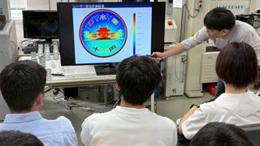
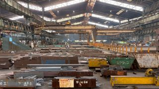
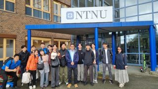
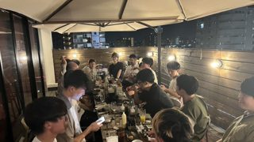
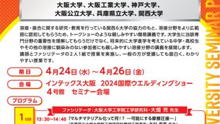
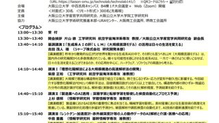
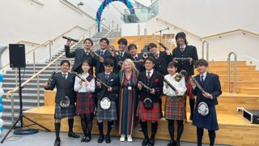

※画像は生成AIで作成したイメージです。このテーマの説明文は準備中です。
関連するお知らせ（題名から自動で集めたもの。21件）
 報告：前田新太郎 特任助教が l-siteなんばで行われた『第150回テクノラボツアー 「デジタルツイン」が拓く近未来社会、その先にあるもの』にて講演しました。
報告：前田新太郎 特任助教が l-siteなんばで行われた『第150回テクノラボツアー 「デジタルツイン」が拓く近未来社会、その先にあるもの』にて講演しました。
報告：8/10 オープンキャンパス2025(2日目)が開催されました。海洋システム工学科「構造系」の実験が行われましたので紹介します！ 報告：8/9にオープンキャンパス2025(1日目)が開催されました。海洋システム工学科「構造系」の実験の様子を紹介します。
報告：8/9にオープンキャンパス2025(1日目)が開催されました。海洋システム工学科「構造系」の実験の様子を紹介します。
報告：柴原研究室 B4 清水大毅さん、B4 原田青空さん、B4 横山侑祐さん が「海洋システム特殊講義」という授業の一環として新来島サノヤス造船にて工場実習を行いました。 柴原研究室 山邉晃瑠さんが、ノルウェー科学技術大学（NTNU）での1ヶ月間の留学を無事に終え、先日帰国いたしました。
柴原研究室 山邉晃瑠さんが、ノルウェー科学技術大学（NTNU）での1ヶ月間の留学を無事に終え、先日帰国いたしました。
ノルウェー科学技術大学(NTNU)に留学中の柴原研究室M1山邉晃瑠さんから留学体験記について報告がありました。 ノルウェー科学技術大学(NTNU)に留学中の柴原研究室M1山邉晃瑠さんから留学体験記について報告がありました。
ノルウェー科学技術大学(NTNU)に留学中の柴原研究室M1山邉晃瑠さんから留学体験記について報告がありました。 8/12 オープンキャンパス2024(2日目)が開催されました。海洋システム工学科「構造系」の実験が行われましたので紹介します！
8/12 オープンキャンパス2024(2日目)が開催されました。海洋システム工学科「構造系」の実験が行われましたので紹介します！ 8/11にオープンキャンパス2024(1日目)が開催されました。海洋システム工学科「構造系」の実験の様子を紹介します。
8/11にオープンキャンパス2024(1日目)が開催されました。海洋システム工学科「構造系」の実験の様子を紹介します。
ノルウェー科学技術大学(NTNU)への約1ヶ月の留学が決まっている柴原研究室 山邉晃瑠さんの壮行会が行われました。
2024国際ウエルディングショーの「世界一受けたい溶接授業」において、柴原研究室 前田新太郎 特任助教が登壇しました。
「研究シーズの宝庫－大阪公立大学からの情報発信 第141回テクノラボツアー」が行われ、柴原正和 准教授が登壇しました。- 第140回テクノラボツアーにおいて、生島一樹 准教授とD1加藤拓也さんが講演し、M1廣瀬天空さんとM1油井達哉さんがポスター発表を行いました。また、前田新太郎 特任助教が施設紹介を行いました。

スコットランドRobert Gordon大学に留学していたM1幅田真史さんが約1ヶ月の留学期間を終えて無事に帰国しました。- スコットランドRobert Gordon大学に留学中の柴原研究室幅田真史さんから留学体験記について報告がありました。
新しい15件を表示しています。すべてのお知らせは一覧から見られます。